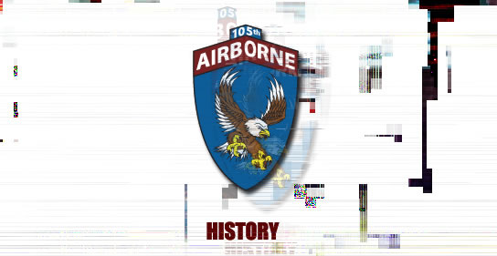
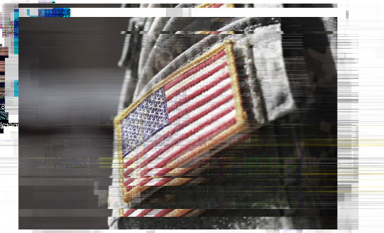
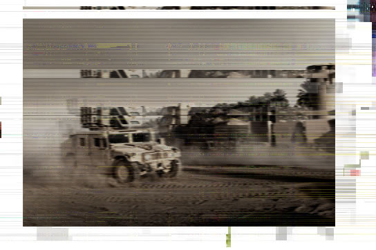
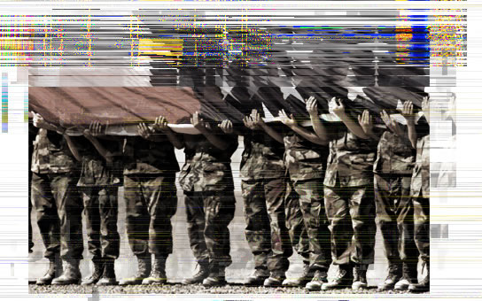

|
|
 |
|
Officially stood up on a mor
Crusaders was part of our nation’s swift answer to the atrocities in Los A
The unit was formed from those former-Airborne soldiers who felt
in their hearts
the call of the Lord in the voice of o
It was a time that called for a new reckoning
of the best” really meant. It wasn’t just about speed and strengt
finding those men and women who kept a personal relationship with
our Savior
the Lord Jesus Christ and allowed the Holy Gh
Officially stood up on a morning in September, -13 BA, the 105th Airborne
Crusaders was part of our nation’s swift answer to the
atrocities in Los Angeles.
The unit was formed from those former-Airborne soldiers who felt in their hearts
the call of the Lord in the voice of our great nation’s Commander-in-Chief.
It was a time that called for a new reckoning and a new vision for what the “best
of the best” really meant. It wasn’t just about speed and
strength. It was about
finding those men and women who kept a personal relationship with our Savior
the Lord Jesus Christ and allowed the Holy Ghost to guide their rifles true.
|
 |
|
After a grueling physical, mental and
remained were TTY’d first to Fort Campbell, KY, and then on to the
eventual
units. For the 105th, w
donated by the congregation of the New Evangelical
Church of Shephe
For the first time in ou
just the shield. It was time for the blindfold of justice to fall before the light.
The scales had weigh
would be that Sharp
Few of the 105th were strangers to combat, most of us having come from active
tours with the 101st Eagles. We shipped out for our first tour as
a new unit
without leaving a single REMF behind us -- the good Christi
Evangelical would care
months of vigilance in southern Syria.
After a grueling physical, mental and spiritual selection process, those who
remained were TTY’d first to Fort Campbell, KY, and then
on to the eventual
units. For the 105th, we shipped out to a temporary field base on an acreage
donated by the congregation of the New Evangelical
Church of Shepherdsville, KY.
For the first time in our active service, our faith became the sword instead of
just the shield. It was time for the blindfold of justice
to fall before the light.
The scales had weighed and the world had been found wanting. The 105th
would be that Sharpened Sword.
Few of the 105th were strangers to combat, most of us having come from active
tours with the 101st Eagles. We shipped out for our first tour as a new unit
without leaving a single REMF behind us -- the good Christians of New
Evangelical flock would care for the newly constructed
Fort Paul during our six
months of vigilance in southern Syria.
|
 |
|
But the morning of the birthday of our
Valentine, NE called out “Stand to! Stand to! Stand to!” and the first incoming
rounds baptized us with blood. Along with
day, taken by the enemies of Jesus Christ in a dead and barren
land that
cried out for the justice we tried to bring to an ungrateful people.
Since then, the 105th has seen rotos in Yemen, Chad, Kashmir, former-Iran,
post-Iran and Turk
extremists up until the very moment nuclear exchange was confir
the President awarde
But the morning of the birthday of our Savior, Dec 25, Pvt Gordon Shula of
Valentine, NE called out “Stand to! Stand to! Stand to!” and the first incoming
rounds baptized us with blood. Along with Cpl Jill Nasmith, Pvt Shula was killed that
day, taken by the enemies of Jesus Christ in a dead and barren land that
cried out for the justice we tried to bring to an ungrateful people.
Since then, the 105th has seen rotos in Yemen, Chad,
Kashmir, former-Iran,
post-Iran and Turkey. For the unit’s bravery in continuing to quash Kashmir
extremists up until the very moment nuclear exchange was confirmed imminent,
the President awarded the 105th the Presidential Unit Citation.
|
 |
|
|